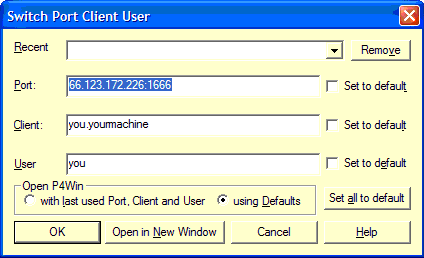

| Date | Revision | Author | Comment |
|---|---|---|---|
| February 7th, 2002 | 1 | Julian Hyde | Created |
| March 5th, 2002 | 2 | Julian Hyde | Tomcat install |
| March 28th, 2002 | 3 | Julian Hyde | Xalan, JUnit and Oracle. Moved product info to an appendix. |
| July 26th, 2002 | 4 | Julian Hyde | Upgrade to Ant 1.5, Tomcat 4.0.4. |
| August 1st, 2002 | 5 | Julian Hyde | Clean up database instructions. Add 'Download the source code' section. |
| August 21st, 2002 | 6 | Paul Dymecki | Add binary installation instructions in 4.1. Add run installation to section 5. |
| August 23rd, 2002 | 7 | Julian Hyde | Add MySQL instructions. |
| September 23rd, 2002 | 8 | Julian Hyde | Revised installation instructions for binary release. |
Here are the steps to setup a build environment.
${xalan.home}/bin, and copy
xalan.jar and xml-apis.jar to ${tomcat.home}/common/lib.build.bat, setting JAVA_HOME, ANT_HOME,
TOMCAT_HOME, XALAN_HOME, JUNIT_HOME.Optional:
Three ways to do this: you can get a binary distribution, get and build a source distribution, or get and build the latest code from the Perforce source-code server.
Download the latest binary
release mondrian-0.x-bin.zip from
SourceForge, and unzip it. The place you unzipped to — say C:\mondrian
or /usr/mondrian-0.x — is your project
location (denoted by ${project.location}). Now
do the following steps:
- Load the database, as described here.
- Change variables in
${project.location}/bin/mondrian.batand${project.location}/bin/mondrian.propertiesto suit your environment.cd ${project.location}/bin- Type
mondrian.bat testto run the JUnit test suite. All of the tests should succeed.- To run the webapp in Tomcat, type
mondrian.bat deploy-to-tomcat. This will createTOMCAT_HOME/webapps/mondrian.war.- Start Tomcat and hit http://localhost:8080/mondrian.
Download the latest mondrian-0.x-src.zip from
SourceForge, and unzip. The place you unzipped to — C:\mondrian
or /usr/mondrian-0.x — your project location (denoted by ${project.location}).
Now build the code, as follows:
C:\mondrian> build Buildfile: build.xml sniff: prepare: parser: [javacup] Opening files... [javacup] Parsing specification from C:\mondrian\src\main\mondrian\olap\Parser.cup... [javacup] Checking specification... [javacup] Warning: Terminal "UNKNOWN" was declared but never used [javacup] Warning: Non terminal "unsigned_integer" was declared but never used [javacup] Building parse tables... [javacup] Computing non-terminal nullability... [javacup] Computing first sets... [javacup] Building state machine... [javacup] Filling in tables... [javacup] Checking for non-reduced productions... [javacup] Writing parser... [javacup] Closing files... [javacup] ------- CUP v0.10k Parser Generation Summary ------- [javacup] 0 errors and 2 warnings [javacup] 47 terminals, 49 non-terminals, and 100 productions declared, [javacup] producing 153 unique parse states. [javacup] 2 terminals declared but not used. [javacup] 0 non-terminals declared but not used. [javacup] 0 productions never reduced. [javacup] 0 conflicts detected (0 expected). [javacup] Code written to "Parser.java", and "ParserSym.java". [javacup] ---------------------------------------------------- (v0.10k) def: [xomgen] Writing src\main\mondrian\xom\meta.dtd [xomgen] Writing src\main\mondrian\xom\MetaDef.java [xomgen] Done [xomgen] Writing src\main\mondrian\olap\mondrian.dtd [xomgen] Writing src\main\mondrian\olap\MondrianDef.java [xomgen] Done [xomgen] Writing src\main\mondrian\resource\Resource.dtd [xomgen] Writing src\main\mondrian\resource\ResourceDef.java [xomgen] Done compile.java: [javac] Compiling 164 source files to C:\mondrian\classes compile.jsp.maybe: compile: BUILD SUCCESSFUL Total time: 35 seconds
If you are a mondrian developer, and need to access the latest source code and check in changes, you should connect to the Perforce source-code server:
Settings > Switch Port Client User...;
the following dialog appears.
Port to 66.123.172.226:1666; set User
to your SourceForge username (for example, jhyde); set
Client to your username plus the name of your machine (for example,
jhyde.notebook).ClientSpec > New... and create a client
with the same name. Set its root to something like 'C:\' or 'D:\work', and
view specification of//open/mondrian/... //<<clientname>>/mondrian/...
First, get the dataset. If you installed from a binary or source distribution, you will need to
download a dataset: get mondrian-data.zip from
SourceForge, and unzip it to ${project.location}. If you got your files from the Perforce
server, you should already have the latest data files.
Now create a database. How you create and load the database depends upon which database you are using.
(Did these instructions work for you? Have you managed to get mondrian working on other databases/versions? Please let me know.)
Start ODBC Administrator, and create a System ODBC DSN called MondrianFoodMart pointing to
${project.location}/demo/access/MondrianFoodMart.mdb.
The JDBC connect string will be jdbc:odbc:MondrianFoodMart.
Version 8.1.7 or higher.
Create the dataset by importing ${project.location}/demo/oracle/FoodMart.dmp:
$ sqlplus system/manager SQL> create user foodmart identified by foodmart; User created. SQL> grant connect, resource to foodmart; Grant succeeded. SQL> exit Disconnected from Oracle8i Enterprise Edition Release 8.1.7.3.0 - Production With the Partitioning option JServer Release 8.1.7.3.0 - Production $ imp foodmart/foodmart touser=foodmart file=C:/mondrian/demo/oracle/FoodMart.dmp Import: Release 8.1.7.3.0 - Production on Mon Aug 5 11:37:35 2002 (c) Copyright 2000 Oracle Corporation. All rights reserved. Connected to: Oracle8i Enterprise Edition Release 8.1.7.3.0 - Production With the Partitioning option JServer Release 8.1.7.3.0 - Production Export file created by EXPORT:V08.01.07 via conventional path import done in WE8ISO8859P1 character set and WE8ISO8859P1 NCHAR character set . importing FOODMART's objects into FOODMART . . importing table "customer" 10281 rows imported . . importing table "days" 7 rows imported . . importing table "inventory_fact_1997" 4070 rows imported . . importing table "inventory_fact_1998" 7282 rows imported . . importing table "product" 1560 rows imported . . importing table "product_class" 110 rows imported . . importing table "promotion" 1864 rows imported . . importing table "region" 110 rows imported . . importing table "sales_fact_1997" 86837 rows imported . . importing table "sales_fact_1998" 164558 rows imported . . importing table "sales_fact_dec_1998" 18325 rows imported . . importing table "store" 24 rows imported . . importing table "time_by_day" 730 rows imported . . importing table "warehouse" 24 rows imported . . importing table "warehouse_class" 6 rows imported Import terminated successfully without warnings.
Note: the schema in FoodMart.dmp was created by running demo/oracle/FoodMartTables.sql, demo/FoodMartData.sql, then demo/oracle/FoodMartIndexes.sql in SQLPlus. To avoid straining my rollback segment, I used the SQLPlus command set autocommit 100.
Setup your environment as follows:
ORACLE_HOME in build.bat, or in your
environment.%ORACLE_HOME%/jdbc/lib/classes12.zip to
CLASSPATH in build.bat, or in your environment.build.xml, set the properties
mondrian.foodmart.jdbcURL and
mondrian.foodmart.jdbcURL.oracle. They should probably include a username and
password, for example jdbc:oracle:oci8:foodmart/foodmart@myoracle.JdbcDrivers property of the connect string includes oracle.jdbc.OracleDriver.Create and populate the schema by running the scripts FoodMartTables.sql,
FoodMartData.sql and FoodMartIndexes.sql in ${project.location}/demo/.
First, install MySQL. Then create a user and a database:
C:\mysql\bin> mysql
mysql> GRANT ALL PRIVILEGES ON *.* TO foodmart@localhost
-> IDENTIFIED BY 'foodmart';
Query OK, 0 rows affected (0.06 sec)
mysql> create database foodmart;
Query OK, 1 row affected (0.00 sec)
mysql> use foodmart
Database changed
mysql> connect foodmart
Connection id: 5
Current database: foodmart
Change the datasets for MySQL syntax:
varchar
columns in FoodMartTables.sql to
varchar(30)false/true values in
FoodMartData.sql to 0/1.Create the tables, load the data, run sanity checks, create indexes:
mysql> source c:/mondrian/demo/FoodMartTables.sql Query OK, 1 row affected (0.00 sec) (15 times) mysql> source c:/mondrian/demo/FoodMartData.sql Query OK, 1 row affected (0.00 sec) (295,789 times) mysql> commit; Query OK, 0 rows affected (0.00 sec) mysql> show tables; +---------------------+ | Tables_in_foodmart | +---------------------+ | customer | | days | | inventory_fact_1997 | | inventory_fact_1998 | | product | | product_class | | promotion | | region | | sales_fact_1997 | | sales_fact_1998 | | sales_fact_dec_1998 | | store | | time_by_day | | warehouse | | warehouse_class | +---------------------+ 15 rows in set (0.02 sec) mysql> select * from days; +------+-----------+ | day | week_day | +------+-----------+ | 1 | Sunday | | 2 | Monday | | 5 | Thursday | | 4 | Wednesday | | 3 | Tuesday | | 6 | Friday | | 7 | Saturday | +------+-----------+ 7 rows in set (0.06 sec) mysql> source c:/mondrian/demo/FoodMartIndexes.sql Query OK, 10281 rows affected (0.63 sec) Records: 10281 Duplicates: 0 Warnings: 0 ... mysql> select customer.gender as c0, -> sum(sales_fact_1997.unit_sales) as c1, -> sum(sales_fact_1997.store_sales) as c2 -> from customer customer, -> sales_fact_1997 sales_fact_1997 -> where sales_fact_1997.customer_id = customer.customer_id -> group by customer.gender; +------+--------+-----------+ | c0 | c1 | c2 | +------+--------+-----------+ | F | 131558 | 280226.21 | | M | 135215 | 285011.92 | +------+--------+-----------+ 2 rows in set (9 min 45.88 sec) mysql> exit
In build.xml, set the property
mondrian.foodmart.jdbcURL. A typical value is
jdbc:mysql://localhost/foodmart?user=root&password=, but because the
value is in an xml file, you will have to escape the '&' as '&', for
example:
<property name="mondrian.foodmart.jdbcURL"
value="jdbc:mysql://localhost/foodmart?user=root&password="/>
As hsqldb, except for the following.
In
FoodMartTables.sql, change DOUBLE to DOUBLE
PRECISION, and BIT to SMALLINT.
There are unconfirmed reports of mondrian running on DB2. If you have succeeded, please let me know.
In a build environment,
cd ${project.location}
build test
In a runtime environment,
cd ${project.location}/bin
mondrian test
mondrian.properties are correct for your environment. In particular:JdbcDrivers property of your connect stringmondrian.test.connectString and
mondrian.foodmart.catalogURLmondrian.test.connectString
and mondrian.foodmart.jdbcURL.build deploy-webapp (or mondrian deploy-to-tomcat,
if this is a a runtime environment).build start.tomcat is an easy way to do this.)These are the products I used to build mondrian. Install all of the products
marked 'required'. (I use /-es in paths because I am run MKS on
Windows 2000, and it makes things simpler.)
In the following, the symbol ${project.location} means the root of your
source tree.
Where the instructions suggest setting an environment variable, it is often
sufficient to edit the corresponding line in ${project.location}/build.bat.
| Product | Required? | Version | Comment |
|---|---|---|---|
| JDK | Yes | 1.3 or later (I use version 1.4.1.) | Available from http://developer.java.sun.com/.
I downloaded j2sdk-1_4_1-windows-i586.exe, and extracted to E:/j2sdk1.4.1. Set
JAVA_HOME to same. |
| Ant | Yes | 1.5 or later | I downloaded
jakarta-ant-1.5-bin.zip, extracted to E:/jakarta-ant-1.5,
and set ANT_HOME to the same. |
| Tomcat | Yes | 4.0 or later (I use version 4.0.4) | Available from
http://jakarta.apache.org/tomcat. I downloaded
jakarta-tomcat-4.0.4.zip, extracted to E:/jakarta-tomcat-4.0.4,
and set TOMCAT_HOME to the same. |
| Jikes | No | Available from http://oss.software.ibm.com/developerworks/opensource/jikes/.
I downloaded jikes-1.15-windows.zip, and extracted jikes.exe
to C:/winnt/system32. Then uncomment the relevant lines of ${project.location}/build.properties. |
|
| Xerces | 1.4.1 or later | xerces.jar is included with Tomcat. |
|
| Xalan | Yes | 2.3.1 or later | Available from
http://xml.apache.org/xalan-j/. I downloaded xalan-j_2_3_1-bin.zip,
extracted to E:/xalan-j_2_3_1, and set XALAN_HOME
to the same. |
| JUnit | Yes | 3.7 or later | Available from http://www.junit.org/. I downloaded
junit3.7.zip,
extracted to E:/junit3.7, and set JUNIT_HOME
to the same. |
| Intellij IDEA (a Java IDE) | No | 2.5.1 | You can download a 30-day evaluation copy from http://www.intellij.com/idea/.
Follow the instructions in Install.txt in idea-2_5_1.zip
to there.
Create a project To use Ant build, click the '6: Ant Build' tab, click '+', choose |
| hsql Database Engine | No | 1.61 |
Available from http://hsqldb.sourceforge.net/.
I extracted |
| MySQL | No | 3.23 |
Available from
http://www.mysql.com/downloads/. Install MySQL from the zip file. Then
install and start the
service:
Download a JDBC driver.
I downloaded
MySQL
Connector/J 2.0.14; extracted |
| PostgreSQL | No | ? | ? |
| JavaCUP (parser generator) | Included with source distribution, as lib/javacup.jar. |
v0.10g (with modifications) | Available from http://www.cs.princeton.edu/~appel/modern/java/CUP/. I modified version v.0.10g to add an Ant task, and to output error messages in a format which Emacs can parse. |
| Weblogic | No | 6.1 |
|
${tomcat.home}/webapps/mondrian.war to intellij's
classpath${tomcat.home}/bin/catalina.bat as follows:
:doJpda if not "%SECURITY_POLICY_FILE%" == "" goto doSecurityJpda %_EXECJAVA% %JAVA_OPTS% %CATALINA_OPTS% -Xdebug -Xnoagent -Xrunjdwp:transport=dt_socket,address=%JPDA_ADDRESS%,server=y,suspend=n %DEBUG_OPTS% -Djava.endorsed.dirs="%JAVA_ENDORSED_DIRS%" -classpath "%CLASSPATH%" -Dcatalina.base="%CATALINA_BASE%" -Dcatalina.home="%CATALINA_HOME%" -Djava.io.tmpdir="%CATALINA_TMPDIR%" %MAINCLASS% %CMD_LINE_ARGS% %ACTION% goto end
${tomcat.home}/bin/setenv.bat as follows:
set JPDA_ADDRESS=5000
cd e:\jakarta-tomcat-4.0.3\bincatalina jpda runWeblogic 6.1 ships with an older, incompatible, version of Xerces. The symptom is the error
java.lang.VerifyError: (class: mondrian/xom/wrappers/XercesDOMParser, method: parse signature: (Lorg/xml/sax/InputSource;)Lorg/w3c/dom/Document;) Incompatible object argument for function call at java.lang.Class.forName0(Native Method) at java.lang.Class.forName(Class.java:120) at mondrian.xom.XOMUtil.createDefaultParser(XOMUtil.java:165) at mondrian.resource.Util.load(Util.java:49) ...
The solution is to place xml-apis.jar and xercesImpl.jar
before weblogic.jar on your class-path.
Generally, Mondrian uses whichever JAXP-compliant XML parser is provided by the system. Unfortunately Weblogic's parser cannot be set to non-validating mode, and Mondrian needs this. Therefore, in a Weblogic environment, Mondrian explicitly uses Xerces. Fyi, this note describes how to change Weblogic's default XML parser.
| Home | No frames | This file is $Id$ (log) |
|